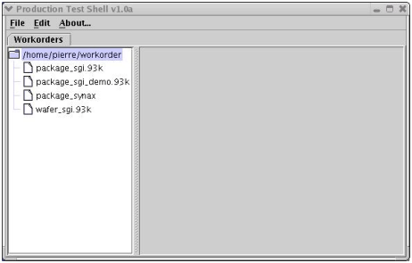
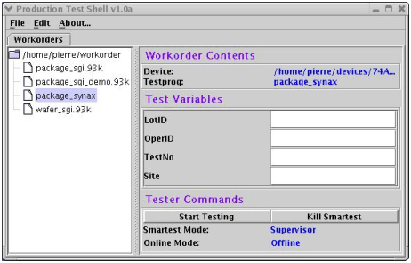

The graphical user interface of the custom production shell
As already indicated, the custom shell needs two GUI's, one to select a workorder, and one to display the content of the workorder and to control workorder execution.
The figure below shows how the workorder selection GUI could look:

When you have selected a workorder, the following window appears:

The Test Variables and the Tester Commands blocks of this window reflect the specifications of the configuration file. Four test parameters, LotID, OperId, TestNo, and Site have been defined in the configuration file; SmarTest has been called in supervisor mode and offline.